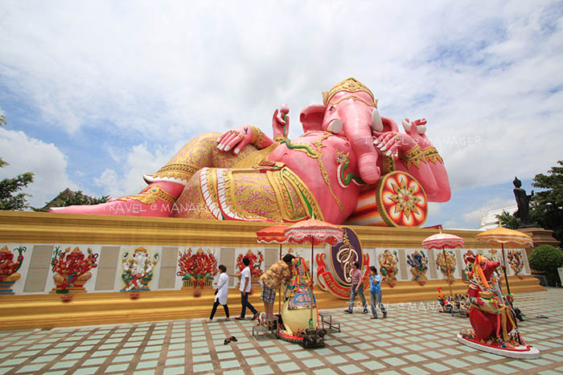
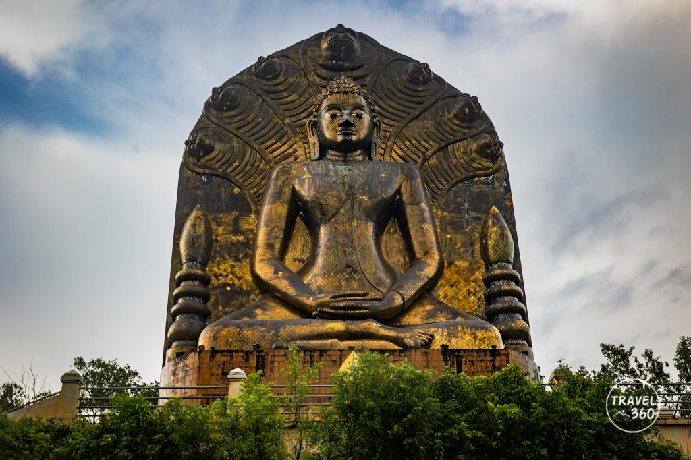
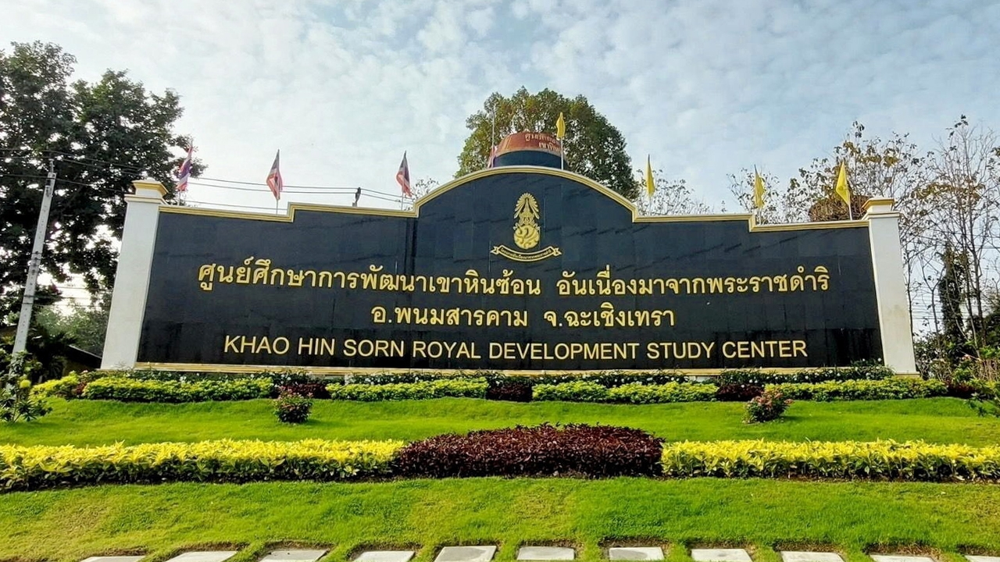

สถานที่ท่องเที่ยว HIGHLIGHT
๑. วัดโสธรวรารามวรวิหาร (หลวงพ่อโสธร)

วัดศักดิ์สิทธิ์คู่บ้านคู่เมืองฉะเชิงเทรา ประดิษฐานหลวงพ่อโสธร พระพุทธรูปศักดิ์สิทธิ์ที่ผู้คนหลั่งไหลมาสักการะขอพรเพื่อความเป็นสิริมงคล
ภายในวัดมีสถาปัตยกรรมที่สวยงาม และพื้นที่ให้ผู้ศรัทธาร่วมทำบุญ เสริมสิริมงคลให้กับชีวิต
๒. ตลาดบ้านใหม่ 100 ปี

ตลาดเก่าแก่ริมแม่น้ำบางปะกง เต็มไปด้วยบรรยากาศย้อนยุค ร้านค้าเก่า และอาหารพื้นเมืองที่น่าสนใจ
นักท่องเที่ยวสามารถเดินชมวิถีชีวิตแบบดั้งเดิม พร้อมเลือกซื้อของฝากและชิมอาหารรสเด็ดท้องถิ่น
๓. วัดสมานรัตนาราม (พระพิฆเนศปางนอนเสวยสุข)

วัดชื่อดังที่มีพระพิฆเนศปางนอนเสวยสุขขนาดใหญ่ที่สุดในประเทศไทย ให้ประชาชนได้สักการะเพื่อความสำเร็จและความสุข
นอกจากนี้ยังมีสิ่งศักดิ์สิทธิ์อื่น ๆ ในวัดที่ผู้คนมักมากราบไหว้ และจุดถ่ายภาพที่สวยงาม
๔. อุทยานแห่งชาติเขาอีโต้

สถานที่ท่องเที่ยวธรรมชาติที่เหมาะสำหรับการเดินป่า ชมวิวทิวทัศน์ และสัมผัสอากาศบริสุทธิ์บนยอดเขา
มีจุดชมวิวที่สวยงามให้พักผ่อน และเส้นทางศึกษาธรรมชาติที่เหมาะสำหรับครอบครัวและนักผจญภัย
๕. ศูนย์ศึกษาการพัฒนาเขาหินซ้อน

ศูนย์การเรียนรู้ด้านการเกษตรและสิ่งแวดล้อม มีการจัดแสดงนวัตกรรมเพื่อการพัฒนาที่ยั่งยืน พร้อมทัศนียภาพที่สวยงาม
นักท่องเที่ยวสามารถเรียนรู้การเกษตรแบบยั่งยืน และชมบรรยากาศร่มรื่นของธรรมชาติที่สมบูรณ์